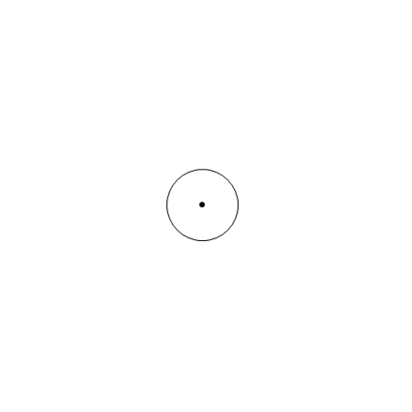

Offline Website Creator
As sound leaves the source, it moves out in ever increasing spherical waves. As it propagates outward, it decreases in amplitude at the rate of 6 dB per doubling of distance. For those interested in the math, it is governed by the following formula.
L = 20log(R/Rref)
where R is the distance to the source, and Rref is the source reference distance.
Offline Website Creator